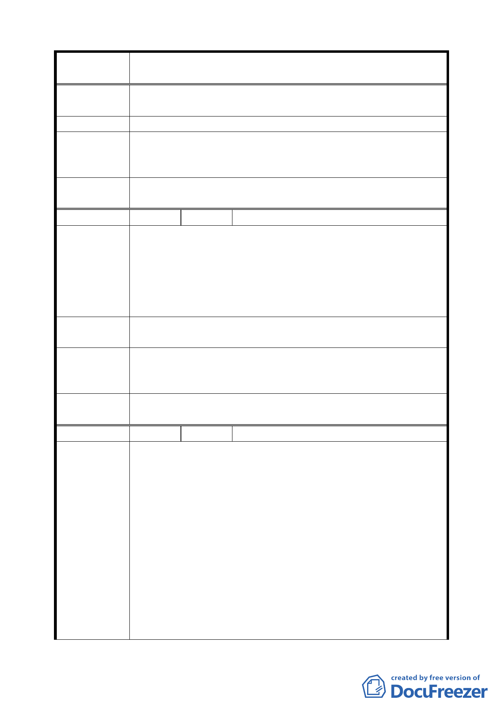

案 名 臺北市文山區都市計畫通盤檢討（主要計畫）案
二、計畫道路通路地區，部分將會切除順向坡角，有造成災
害之風險。
建 議 辦 法 廢止計畫道路，改為符合現況之住宅區。
專案小組
審 查 結 論 同編號 23。
（94.12.21）
委員會議
決議
同編號 23。
編 號 ２５ 陳情人 林樹欉（09430082800）
建議位置：萬芳段四小段 231、233、234、238（部分）地號。
建議理由：
陳 情 理 由 62 年原編為住宅區，78 年因捷運系統木柵線工程沿線土地變
（ 萬 芳 ） 更為交通用地，惟捷運已完工通車，捷運局並未使用該地，
日後亦無須使用該地，經 86.12.2 前市長陳水扁裁示撤銷徵
收，原地主以原價購回。
建議辦法
86.12.2 市長陳水扁裁示本土地由都發局納入該地區都市計
畫通盤檢討辦理，恢復原都市計畫使用分區﹍住宅區。
專案小組
審查結論
（94.7.11）
請都市發展局確認地號範圍後，同意該等土地恢復為第二種
住宅區。
委員會議
決議
依專案小組審查結論辦理。
編 號 ２６ 陳情人 劉慶興（09430069900）
建議位置：萬芳段二小段 507、206、508、509 等地號。
建議理由：
一、本土地所處緊鄰於住宅區，面前道路為 20 米寬，多年以
前曾為支持政府興建捷運木柵線工程出租予捷運工程承
建商馬特拉公司，作為工程機具及材料的堆置倉庫與作
陳情理由
（萬芳）
業場地，當時為了該項作業，現場局部也作了一些整地
與擋土坡坎，在建設局的環境地質圖中也顯示有人為挖
填方，目前現地情況十分平坦，後方山丘陵線低矮，經
過這麼多次的地牛翻身與豪大雨，地形也不曾有任何的
移動變化，在臺北市政府建設局的環境地質圖中也顯示
地質狀況十分良好，這樣一處平坦整過地動過土、面前
道路 20 米、緊鄰住宅區、地質狀況良好的土地卻居然被
劃定在「保護區」內，這樣劃定的基準為何？實在是情
一七